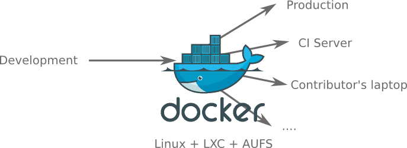

Motivation
We want to ship our working software to different places as fast as possible

Main problems
- Moving from development to production is hard!
- Conflicting libraries / different versions
- Different Operating Systems
- Different versions of databases
- ...
- Creating, updating and mantaining the full software stack is hard!
- A project usually contains many libraries, databases, services...
- Hard to keep a reproducible version of a project
- Testing / Continuous integration / Continuous deployment is hard!
How to solve it (DIY)
Do-It-Yourself!
- 1- Copy/install dependencies (manually/scripts)
- 2- Prepare databases
- 3- Install the latest version of the project
- 4- Configure properties
- 5- Try it!
- 6- Ouch! something is missing, it does not work!
- 7- Fix errors
- 8- Repeat again until everything is working
- 9- Write manuals to help other people configuring the whole monster
How to solve it (Virtual Machines)
Package everything in a VM and deploy it in different environments
VM - Disadvantages
- Heavy. How many VMs can you run in your laptop?
- Overhead. Full virtualized OS (I/O, resources...)
- Size. Usually many GBs for each VM
- Portability problems. Different virtualization solutions
- Management. Hard to mantain / config / reuse different versions of each VM
Management problems can be solved with Vagrant, Chef, Puppet...
How to solve it (Docker)
Package everything in LXC containers
Docker vs Virtual Machines